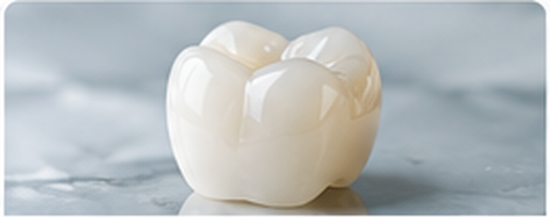

Zirconia workflow
A cleaner way to coordinate zirconia cases.
DenZest helps clinics manage zirconia crown cases without adding another layer of laboratory chasing to the dental team's day.
- Clear case and prescription communication
- Digital scan file coordination
- Shade and clinical instruction follow-up
- Packaging and delivery coordination
- Structured partner pricing for participating clinics
